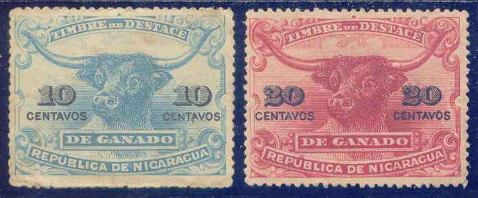
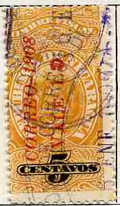
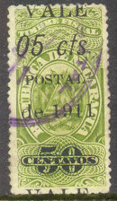

{kind=link}

Return To Catalogue - Nicaragua postage stamps - Nicaragua miscellaneous
Note: on my website many of the
pictures can not be seen! They are of course present in the
catalogue;
contact me if you want to purchase it.
In 1899 the first fiscal stamps (large sized: 24 x 44 mm) were issued in Nicaragua (1 c blue, 2 c yellow, 5 c brown, 10 c green, 50 c violet and 1 P red).
Some railway stamps (FERRO CARIL DE NICARAGUA) were overprinted 'Timbre Fiscal' in 1903 (5 c on 2 c red and 10 c on 1 c red).
In 1904 a new series of large fiscal stamps (size 21 x 37 mm) was issued (1 c orange, 5 c yellow, 10 c blue, 25 c lilac, 50 c green, 1 P brown, 2 P grey, 5 P blue, 10 P red, 25 P green and 50 P red), they have the year '1904' in the design if I'm well informed.
Similar fiscal stamps but without year were issued in 1908: 5 c red, 10 c green, 25 c yellow, 50 c green, 1 P brown, 2 P grey, 5 P blue, 10 P red, 25 P green and 50 P red. In 1912 the following values were added: 5 c violet on green (2 types), 10 c green on blue (2 types), 25 c red on green, 50 c brown on blue and 1 P blue.
Some other fiscal stamps also exist, for example with overprint 'DEP DE ZELAYA' or with inscription 'MOSQUITO RESERVATION' or telegraph stamps with overprint 'DESTACE'.

I've been told that these two fiscal stamps with an image of a
bull, were issued in 1910. The inscription is 'TIMBRE DE DESTACE
DE CANADO'
1 c blue

'VALE 1' (red) on 5 c orange 'VALE 2' (blue) on 5 c orange 'VALE 4' (green) on 5 c orange 5 c orange 10 c blue 'VALE 15' (red) on 50 c green 'VALE 35' (yellow) on 50 c green 1 P brown 2 P grey
2 c orange 'VALE 4' on 2 c orange 'VALE 5' (blue) on 2 c orange 'VALE 10' (green) on 2 c orange
'VALE 1' on 50 c green 'VALE 1' (orange) on 50 c green 'VALE 4' (green) on 50 c green 'VALE 5' (red) on 50 c green 'VALE 10' on 50 c green
02 c on 5 P blue 05 c on 10 P red 10 c on 25 c lilac 10 c on 2 P grey 35 c on 1 P brown

05 cts on 25 c lilac 05 cts on 50 c green 05 cts on 5 P blue 05 cts on 50 p red 10 cts on 50 c green
'Vale 2 cts. CORREO DE 1911' on 5 c on 2 c blue and red 'Vale 05 cts. CORREO DE 1911' on 5 c on2 c blue and red 'vale 10 cts. CORREO DE 1911' on 5 c on2 c blue and red 'Vale 10 cts. CORREO DE 1911' on 10 c on1 c red and black 'vale 15 cts. CORREO DE 1911' on 1 c red and black 'CORREO 02 centavos' on 1 c red 'CORREO 20 centavos' on 1 c red 'CORREO 50 centavos' on 1 c red 'Correo Vale 2 cts. 1911' (blue) on 10 c on 1 c red 'Correo Vale 5 cts. 1911' (blue) on 10 c on 1 c red 'Correo Vale 10 cts. 1911' (blue) on 10 c on 1 c red 'Correo Vale 5 cts. 1911' (red) on 5 c on 2 c blue 'Correo Vale 10 cts. 1911' (red) and 'Official' on 10 c on 1 c
(Telegraph stamp made in a similar fashion)
'CORREOS 05 cts. 1911' on 2 p grey
Example of a fiscal stamp surcharged after 1920 for postal purposes:

(Nicaragua R.de C. Vale un cent. in blue, similar stamps in
yellow with red overprint and in blue with red overprint exist,
issued in 1922)